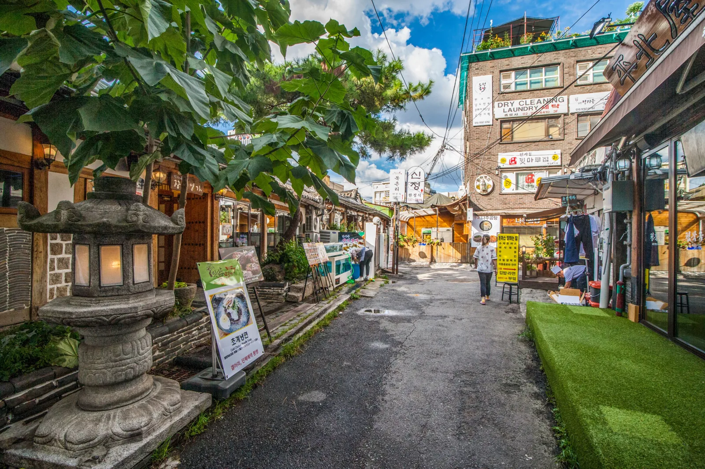
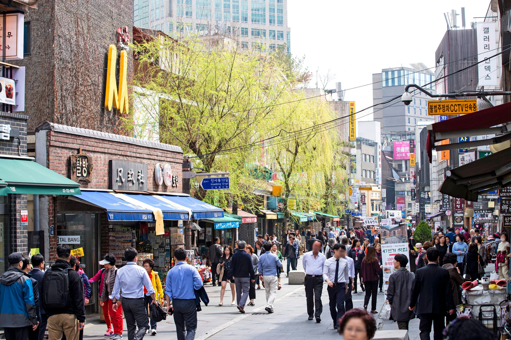
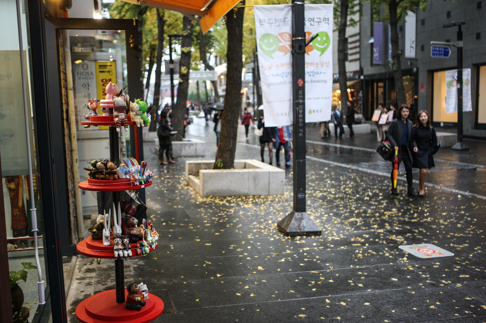
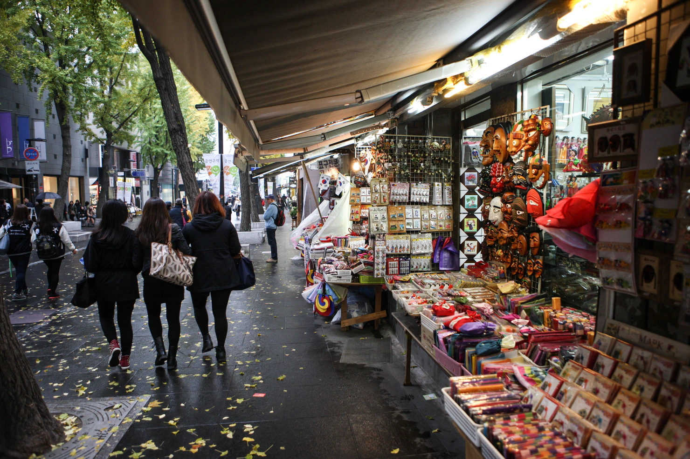
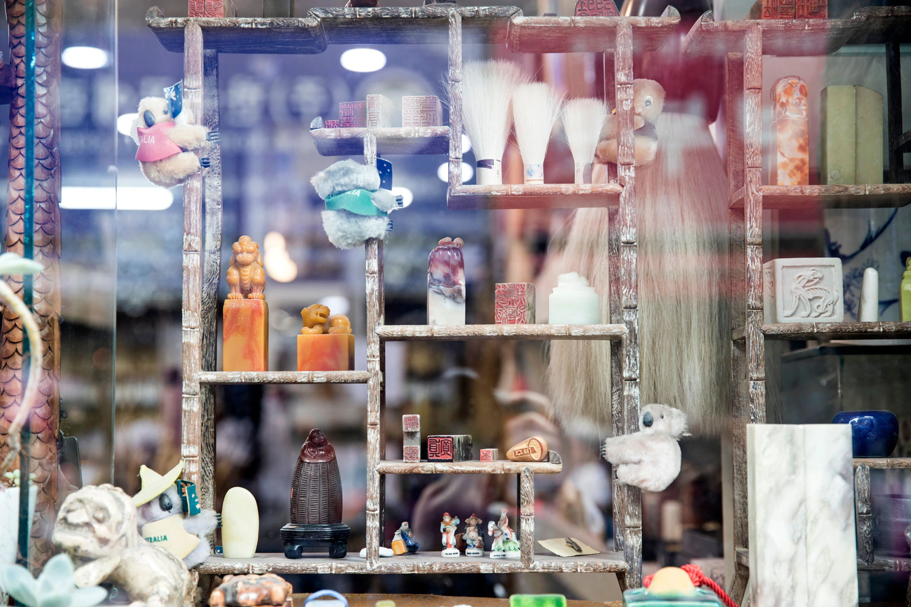
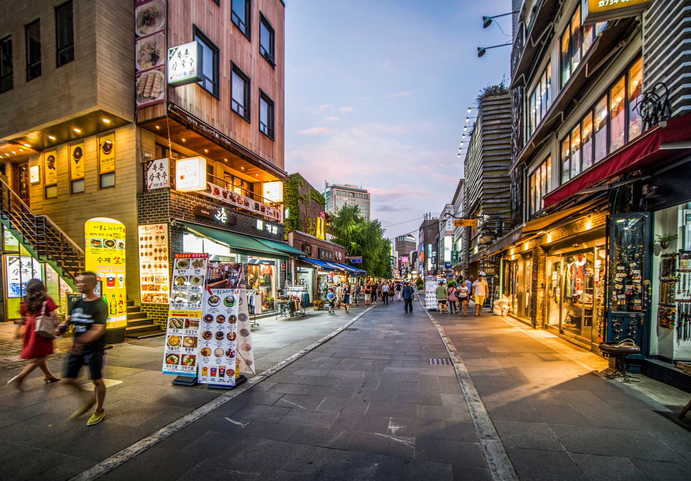

仁寺洞観光ガイド 2026
仁寺洞は、正反対の2つの方法で計画を失敗しやすい街です。

メインストリートをまっすぐ歩き、お土産店を数軒見ただけで「なぜ有名なのだろう」と感じることがあります。
逆に、工芸店を20軒、茶屋を5軒、サムジギル、曹渓寺、さらに周辺エリアまで全部保存して、ゆっくり歩くはずの街をまたチェックリストにしてしまうこともあります。
多くの旅行者にとって、仁寺洞だけで丸一日の観光は必要ありません。
数時間使い、韓国工芸、きちんとした食事、伝統茶を1回、そして実際に気になった通りを楽しめば十分です。
初めてのソウルなら、仁寺洞は大きな歴史地区ルートの中に入れるとさらに強くなります。
景福宮 → 北村 → 仁寺洞 → 曹渓寺 → 夜の選択1つ
最後は益善洞、清渓川、または鍾路周辺で夕食でも構いません。
仁寺洞を「全部見る」ことが目的ではありません。
ソウル中心部の別のショッピング街とは違う理由が見えるくらい、少し歩く速度を落とすことが大切です。
仁寺洞が本当に得意なこと
仁寺洞は、一日の真ん中でペースを落としたいときに強い街です。
午前中に景福宮を歩いたり、北村の坂と韓屋の道を歩いたりしたあとかもしれません。
仁寺洞へ着くころには、もう1つ大きな観光地を追加する必要がない日もあります。
必要なのは、食事する、工芸を見る、座る、持ち帰る価値のあるものを買う、そしてソウル中心部をあとどれだけ使うか決める場所です。
仁寺洞は、その役割を特にうまく果たします。

一般的なお土産だけでなく、韓国工芸を見に来る
メインストリートには観光客向けのお土
産店がたくさんあります。
それだけが仁寺洞の理由ではありません。最初のお土産棚を越えて見ると、陶磁器、紙製品、書道用品、小さな工芸品、ギャラリー、韓国のデザインや伝統素材とつながりのある商品が見えてきます。
韓国工芸の専門家になる必要はありません。
次の2種類の買い物を区別できれば十分です。
韓国旅行を思い出すための安くて気軽なもの。
物そのものに興味を持って選ぶもの。どちらも正しい買い物です。
ただし、
同じショッピング体験ではありません。
伝統茶には「もう1杯のコーヒー」より時間を使う価値がある
仁寺洞は、座ること自体が訪問の一部になる街です。
伝統茶を、店と店の間の15分に押し込まないでください。
1軒選ぶ。
本当に飲みたいものを注文する。
そして、その休憩が役割を果たすまで座ってください。
すでに宮殿や北村を歩いてきた旅行者なら、40〜50分足を休めるほうが、観光地をもう1つ追加するより残りの一日を良くすることがあります。
お茶に興味がなければ飛ばしてください。
仁寺洞にいるからといって、伝統文化を「演じる」必要はありません。
メインストリート全部より、横道の選び方が重要
仁寺洞通りは、街を理解するための分かりやすい線です。
そのように使ってください。
ただし、良い食事、茶屋、ギャラリー、小さな店の一部は、明確な歩行動線から少し外れています。
何か気になるものが見えたら横道へ。
ガイドに「隠れた場所がある」と書いてあるからという理由で、すべての路地へ入る必要はありません。
メインストリートで方向感覚を保ちます。
横道で、自分の仁寺洞を作ります。
サムジギルは分かりやすい目印。半日の目的地ではない
初めてならサムジギルは見る価値があります。
らせん状の動線にショップが並び、工芸・デザイン商品を、街を何度も横断せずにまとめて見られます。
多くの旅行者なら1周で十分です。店が面白ければ長くいます。
興味がなければ早く出ても構いません。
すべての階を撮影しなかったからといって、
仁寺洞を理解できなかったわけではありません。
曹渓寺は、もう一度一日のテンポを変える
曹渓寺は近いため、旅程を大きく組み直さず追加できます。
それ以上に、店や茶屋とは違う時間を作れます。
現役の仏教寺院です。
祈る人、法要へ参加する人、宗教生活を送る人がいます。
仏教が主な関心でなければ、短時間でも十分です。
静かにし、周囲を見て、目の前の人を観光展示の一部のように扱わないでください。
仁寺洞は昼のほうが強い
クラブ、深夜ショッピング、バー巡りを中心に、ソウルの夜を仁寺洞で作ることはおすすめしません。
仁寺洞が時間を使う価値を持つのは、もっと早い時間です。
昼食、工芸、伝統茶、ギャラリー、寺院、街歩き。
夕方から夜へ変わるころには、別の街へ移るほうが合う場合があります。
益善洞なら、カフェ、飲食店、よりにぎやかな韓屋空間へつながります。
鍾路なら、夕食やお酒へ移れます。
清渓川なら、店を十分見たあとも歩き続けられます。
仁寺洞が一日の全部を解決する必要はありません。
あまり時間を使わなくてもいい人
工芸、伝統茶、ギャラリー、歴史的なソウル中心部にあまり興味がないなら、「初めてのソウル定番」に出てくるからという理由だけで半日を与えないでください。
他のエリアを移動する途中に1〜2時間歩くだけでも構
いません。
現代ファッション、Kビューティー旗艦店、ナイトライフが優先なら、時間を使う理由がもっと強い街があります。
仁寺洞は、街のゆっくりした部分そのものを望む人に価値があります。
有名な通りへ来ることと、その街にとどまる理由があることは別です。
まず、実際に使える時間から考える
仁寺洞は、「全部回る街」だと考えるのをやめると計画しやすくなります。
仁寺洞そのものが目的なのか、歴史的なソウル中心部の一部なのかで必要時間が変わります。
約2時間なら
シンプルにします。
実用的には、
仁寺洞通り → サムジギル → 伝統茶
または、
仁寺洞通り → 昼食 → 曹渓寺
くらいです。2時間あれば、メインストリートを理解し、工芸が集まる1か所を見て、仁寺洞が普通のショッピング街と違うことを1つ体験できます。
長い昼食、本格的な工芸ショッピング、複数ギャラリー、伝統茶、曹渓寺まで急がず入れる時間ではありません。
何を優先するか決めてください。
4〜5時間あるなら
仁寺洞自体を一日の主要部分にするなら、このくらいが使いやすいです。
たとえば、
仁寺洞通り → サムジギル → きちんと昼食 → 選んだ工芸・ギャラリー → 伝統茶 → 曹渓寺までできます。
大事なのは、止まれることです。
次の観光地が待っているから急いで食べるのではなく、昼食を座って食べられます。
40分お茶を飲めます。
陶器店やギャラリーが本当に気になったから入ることができます。「あと7分しかないから」という時間の使い方をしなくて済みます。
多くの旅行者には、これで仁寺洞は十分です。
観光に丸一日使えるなら
仁寺洞を長くするのではなく、周辺の歴史地区へつなげてください。
初めてのソウルなら、
景福宮 → 北村 → 仁寺洞 → 曹渓寺 → 夜の選択1つ
のほうが強い一日です。
仁寺洞は一日の全部ではなく、中盤になります。
各エリアの役割が変わります。
宮殿はフォーマルな歴史。
北村は住宅として残る韓屋の道。
仁寺洞は昼食、工芸、茶、ゆっくりした商業休憩。
曹渓寺でまたテンポが変わる。
夜は別の場所へ移せます。
宮殿と北村をすでに見たなら
長い旅程を作るためだけに、また繰り返さないでください。
仁寺洞から直接始めます。
4〜5時間使い、そのあと益善洞、清渓川、鍾路の別エリアへつなげれば十分です。
2回目のソウル旅行で、初回のチェックリストを再現する必要はありません。
時間が増えたら、立ち寄り先ではなく選択肢を増やす
これが残したいルールです。
1時間余ったら、興味があったギャラリーへ長くいてください。
茶屋でゆっくりする。
本当に欲しい陶器を考えてから買う。昼食を急がない。
予定表に空白があるからという理由で、
自動的に観光地を増やさないでください。
仁寺洞は、予定されていない時間を残すほど良くなるソウルのエリアの1つです。
どこから始める？安国か南側か
仁寺洞にも唯一の正解入口はありません。
初回旅行者には安国駅を基本にしやすいですが、その日の他の予定で決めるほうが合理的です。
宮殿側から来るなら安国
安国は、景福宮
北村三清洞
地下鉄
3号線から来
る日に自然です。
仁寺洞の北側へも入りやすくなります。
シンプルなルートは、
安国 → 仁寺洞通り → サムジギル → 昼食／茶 → 曹渓寺 → 鍾路南側
です。街に方向ができます。
仁寺洞の真ん中へ入り、通過済みの場所へ何度も戻る動線を減らせます。
すでに鍾路側なら南側から入る
鐘閣、鍾路、清渓川など仁寺洞南側にいるなら、「安国」という駅名から始めるためだけに街を通り過ぎないでください。
すでにいる側から入ります。
北へ歩き、次の予定が合うなら安国付近で終えれば十分です。
通りはどちら向きでも使えます。
地下鉄駅の名前ではなく、旅程が方向を決めます。
鍾路3街も使える
益善洞がすでに一日に入っている、または1・3・5号線が動線に合うなら、鍾路3街も使えます。
ただし複数路線の大きな駅は、地上地図より構内徒歩が長い場合があります。
出口から近いことと、ホームから短時間で着くことは同じではありません。
安国のほうが到着が簡単なら安国。
鍾路3街なら乗り換えが減り、一日の残りに合うなら鍾路3街。それで十分です。
どこで終えたいかを先に考える
「どこから始める？」より、こちらのほうが役立つことがあります。
夜が益善洞や鍾路なら、安国から南へ進むのが自然です。
清渓川から来て、そのあと北村・三清洞へ向かうなら逆にします。
仁寺洞はコンパクトなので、どちら向きでも使えます。
無駄になるのは、方向を決めず同じ場所を何度も横切ることです。
Korea Insideの基本
初回なら、
安国 → 仁寺洞通り → サムジギル → 昼食 → 工芸／ギャラリー → 伝統茶 → 曹渓寺
が最も分かりやすいです。
安国だけが正しい入口だからではありません。
一方向で街を使え、そのあとに良い選択肢がいくつも残るからです。
仁寺洞通りは「街の背骨」に使う
仁寺洞通りは、街を理解しやすくする線として役立ちます。
ただし、仁寺洞全体をメインストリートだけにしないでください。
一方向に歩き、小さな路地、店、ギャラリーへ入ったあと戻る基準線として使います。
保存した場所が別々の横道にあるからという理由で、同じ区間を何度も歩くより使いやすいです。
横を見る
旅行者の中には、仁寺洞通りを端から端まで20分歩き、お土産店を見ただけで「何を見る場所だったのだろう」と感じる人がいます。
歩きながら横を見るほうが良いです。
小さなギャラリー、陶器店、茶屋、飲食店が、目の前のもう1軒のお土産店より曲がる理由になることがあります。
ただし、「面白い場所は隠れている」とガイドに書いてあるからという理由で、全路地へ入る必要はありません。
実際に理由が見えたときだけ曲がってください。

全部の店へ入らない
仁寺洞にも、明洞や聖水とは別の形で同じ問題があります。
店が多いため、見ているだけで午後が消えます。
違うのは買い物の内容です。
コスメやファッションではなく、陶器、紙製品、書道用品、絵、工芸、お土産が判断対象になります。
興味のあるカテゴリーを選んでください。
残りは通り過ぎて構いません。
伝統的に見える店だからといって、自分の旅行に関係するとは限りません。
ギャラリーは短時間でもいい
小さなギャラリーへ入るために、韓国現代美術を事前に理解する必要はありません。
展示が気になったら入ります。
興味がなければ進みます。
すべてのギャラリーに同じ時間を使わなければ、と考えるのが間違いです。
面白い5分でも立派な立ち寄りです。
弱い「保存済みピン」のために戻らない
数か月前に保存したおすすめは、スマートフォン上では重要に見えても、
現地では普通に見えることがあります。
それで構いません。すでに通り過ぎ、今も興味を感じないならそのまま進んでください。
仁寺洞は、目の前で見つけたものにルートを反応させるほうが良くなります。
メインストリートが構造を与えてくれるため、柔軟に動けます。
工芸・お土産：まず何を買うのか決める
仁寺洞は、ソウル中心部でお土産を買いやすい場所の1つです。
だからといって、伝統的に見えるものすべてがスーツケースの場所を使う価値があるわけではありません。
買う前に、どんな買い物なのか決めてください。
韓国の小さな思い出が欲しいだけなら
シンプルで構いません。
しおり、文房具、小さな飾り物、軽いギフトのほうが、旅行中ずっと割れ物を守るより目的をよく満たすことがあります。
お土産を買うたびに「一生物」である必要はありません。
本当に欲しいのが安くて気軽なものなら、それが正解です。

韓紙・文房具が好きなら、そこへ時間を使う
韓紙、書道関連用品、
韓国の文房具は、一般的なお土産棚とは違う買い物になります。
伝統的な絵柄がある最初の商品を買うのではなく、紙、印刷、素材、デザインを見てください。
このカテゴリーでは、大きな総合土産店より小さな専門店のほうが面白いことがあります。
陶器や本当の工芸品が欲しいなら、買う前にゆっくり考える
カップ、器、飾り陶器、
手作り工芸品は荷物スペースを使い、壊れれば簡単に代わりが見つかりません。
韓国旅行の残りと帰国便まで持ち運ぶほど、その物自体が好きか考えてください。
また、店がその作品について何を説明しているかも見てください。
伝統的なデザインだからといって、すべてが手作り、韓国製、特定作家の作品とは限りません。
その違いが重要なら、支払い前に確認してください。
個人的なものが欲しいなら
一般的なギフトより、カスタマイズされた物のほうが合う場合があります。
名前の印章、書道、手作り品、工芸体験で自分が作る物などです。
ただし、カスタマイズには時間がかかります。
それが仁寺洞へ来た理由の1つなら、正式な時間を取ってください。
そうでなければ、予定外のワークショップに、もっと楽しみにしていた茶、昼食、街歩きを奪わせないでください。

値段は「何のために買うか」で変わる
簡単な観光土産と手作り工芸品を、同じ競合商品として比較しないでください。
役割が違います。
1つは安い思い出。
もう1つは素材、技法、作家、デザインそのものにお金を払う物かもしれません。
先にどちらが欲しいか決めます。
そのカテゴリーの中で比較してください。
レジより先にスーツケースを考える
陶器、額装作品、大きな装飾品では特に重要です。
その物は旅行の残りも無事に持ち運ぶ必要があります。
ホテルを何回も移動する、荷物制限が厳しい場合、大きな物のほうが好きでも小さいほうが良い買い物になることがあります。
支払い前に梱包方法を確認してください。
美しい物でも、残り5日ずっと「割れないか」と心配するなら、旅行用品としては悪い選択です。
Korea Insideのルール
安いお土産が欲しいなら、安いお土産を買う。
物そのものに理由があるなら、もっとお金を使う。
持ち帰るほど欲しいものがなければ、何も買わない。
買い物袋がなくても、仁寺洞へ来る価値はあります。
サムジギル：見る。でも一日の中心にはしない
サムジギルは、初めての仁寺洞で使いやすい目印です。
らせん状の通路が地上から屋上まで続き、その途中に小さなショップ、ギャラリー、工芸スペースがあります。
だから便利です。
街を何度も往復せず、韓国工芸とデザイン商品をまとめて見られます。
半日を使う必要があるという意味ではありません。
多くの旅行者は30〜40分で十分
建物を下から上まで1回歩きます。
本当に興味がある店だけ見ます。
陶器、文房具、アクセサリー、アートなど、詳しく見たいものがあれば長くいてください。
何も引っかからなければ、上まで歩き、周囲を見て、次へ移動します。
サムジギルは仁寺洞を理解する助けになる場所です。
すべての店を確認する義務ではありません。
建物そのものも行く理由の1つ
サムジギルは、連続した通路が仁寺洞の別の路地のように、中庭を囲みながら上へ続くよう設計されています。
普通の屋内ショッピングセンターとして見るより、その動線自体が面白い部分です。
店も大切ですが、「見る行為が1本の連続した散歩になる」建物にも意味があります。
一度それを感じたら、
あとは商品へ時間を使う価値があるか決めてください。
集中していることと、全部が唯一無二であることは別
サムジギルの長所は便利さです。
小さな店が1か所に集まっています。
仁寺洞で買う価値があるものが、すべて建物内にあるという意味ではありません。
好きなものがあれば買って構いません。
迷うなら、街をもう少し歩いてから決めてください。
持ち帰る買い物なら、最初に見たものを買うより、あと30分比較するほうが役立つことがあります。
このタイプの買い物に興味がなければ短くする
工芸、デザイングッズ、お土産に興味がないなら、サムジギルに無理に感動する必要はありません。
1回歩いてください。
そのあと昼食、茶、曹渓寺、ソウル中心部の別の場所へ時間を使います。
有名スポットでも、短い立ち寄りで構いません。
伝統茶：1軒選び、ちゃんと座る
伝統茶は、仁寺洞で「効率化しないほうがいい」数少ない時間の1つです。
もう1軒の店のように扱わないでください。
注文し、茶碗を撮り、10分で出ることが目的ではありません。
茶屋を1軒選び、座る時間を取ってください。
40〜60分くらい使っていい
お茶を飲むころには、宮殿、北村、仁寺洞を数時間歩いているかもしれません。
そこで休憩の価値が変わります。
韓国の飲み物を試すだけではありません。
足を休め、人の流れから離れ、一日の後半を楽しめる状態に戻します。
多くの旅行者にとって、ギャラリーや土産店をもう1つ足すより価値があります。
韓国茶を知らなくても入っていい
伝統茶のメニューは馴染みがないかも
しれません。
問題ありません。英語説明があれば読み、迷ったらその店のおすすめを聞いてください。
茶葉を使うお茶を好む人もいれば、
果物、穀物、薬草系の伝統飲料を好む人もいます。
メニューで最も「文化的に立派そうなもの」を選ぶ必要はありません。
本当に飲みたいものを選んでください。
飲み物だけでなく茶屋の空間にも意味がある
部屋そのものが魅力になることがあります。
仁寺洞には、空間、茶器、サービス、ゆっくりした時間まで体験の中心になる伝統茶屋があります。
有名な1軒だけが唯一の正解という意味ではありません。
求める休憩に、雰囲気とメニューが合う場所を選んでください。
茶屋巡りにはしない
基本ルートなら1軒で十分です。
2軒目は、1軒目ほど一日へ価値を追加しないことが多いです。
伝統茶が大きな個人的関心なら、このルールは無視して深く見てください。
そうでなければ、
茶屋1軒 → しっかり座る → 次へ
が仁寺洞の時間を強くします。
茶と昼食を同じ仕事にしない
空腹なら先に食べてください。
伝統茶と小さなデザートが自動的に昼食になるわけではありません。
逆に、大きな韓国料理を食べた直後に「次の予定だから」という理由で茶屋へ入る必要もありません。
少し歩いてください。
本当に休みたいタイミングで茶屋を使います。
予定は地図だけでなく、体の状態にも合わせます。
Korea Insideの基本
初回なら、
工芸と街歩き → 昼食 → 短くもう一度見る → 伝統茶を1軒のほうが、
店 → カフェ → 店 → カフェ → 店
より良いリズムになります。
仁寺洞は、静かな部分を静かなまま使うと価値が上がります。
仁寺洞で「ちゃんとした食事」をする
仁寺洞の一日は、
軽食 → 茶 → デザート → また軽食
になり、4:00 PMに「誰も昼食を食べていない」と気づくことがあります。
最初から食べ歩きが目的でなければ避けてください。
景福宮や北村から来たなら、仁寺洞は1時間歩くのを止め、きちんと食事するのに向いています。
昼食は「空腹を解決する」役割にする
昼食は空腹を解決します。
伝統茶は、そのあとゆっくりした文化的休憩を作れます。
地図で近いからといって、2つを急いで1回にまとめる必要はありません。座ってください。
きちんと
食べます。
そのあと通りへ戻ります。
保存した店をもう1つ守るより、この1時間で午後の使える体力が増えることが多いです。
餃子やスープは、分かりやすい食事が欲しいとき
仁寺洞で食べるたびに、大きな韓定食を選ぶ必要はありません。
スープ、すいとん、餃子などは、まだ数時間歩く日に使いやすい選択肢です。
このカテゴリーを挙げるのは、全員が同じ有名店へ行くべきだからではありません。
仁寺洞の昼食は、長いフォーマルな食事でなくても、温かく分かりやすい韓国料理にできるということです。
列が食事の価値に合わないほど長ければ、別の店で食べてください。
その店自体が旅行の優先事項でない限り、昼食のために1時間立つ必要はありません。
韓定食は別の判断
昼食自体を文化体験の一部にしたいなら、
韓定食スタイルの食事へもっと時間を使う理由があります。
特に、親世代と旅行している
グループ全員が長く座りたい
食事そのものが体験したいもの
直後に時間指定の観光がない場合に合います。
仁寺洞が2時間しかない日には合いにくいです。
長い食事は何かと入れ替えてください。
予定の上にそのまま追加しないでください。
ベジタリアン旅行者には意外に強い選択肢がある
寺院料理は、仁寺洞・曹渓寺エリアに、他の観光街とは本当に違う食の選択肢を作ります。
麺を手早く食べることとは同じではありません。
寺院料理そのものに興味があるなら、十分な時間を取り、現在の営業時間と予約条件を確認してください。
単に昼食が必要なだけなら、文化プログラムにする必要はありません。
1軒のために街を横断する前にブレイクタイムを確認
韓国では重要です。
昼と夜は営業していても、午後に数時間休む店があります。特定店が重要なら、
その日の営業時間を確認してください。
古い地図に「9時まで営業」とだけ書いてあるからという理由で、
3:30 PMに街を横断しないでください。
Korea Insideの基本
宮殿や北村から来たなら、
先に歩く → ちゃんと昼食 → 工芸・買い物 → あとで伝統茶のほうが使いやすいです。
茶は休憩。
昼食は食事。
それぞれに役割
を持たせてください。
曹渓寺：ルートに自然に入るから追加する
曹渓寺を、
もう1つの大規模観光プロジェクトにする必要はありません。
それが仁寺洞との相性の良さでもあります。店と茶屋から少し歩くだけで、鍾路中心部の現役仏教寺院へ突然入ります。
雰囲気が変わること自体が、追加する理由です。
多くの旅行者は20〜30分で十分
境内を歩きます。
主要な建物を見ます。
数分ペースを落とします。
そして次へ進みます。
仏教、寺院建築、法要に本当に興味があるなら長くいてください。
そうでなければ短時間で十分です。
有名な場所だから「最低○分必要」と時間を引き延ばす必要はありません。
ここでは礼拝が行われている
曹渓寺は屋外博物館ではありません。
祈る人、法要へ参加する人、宗教的な理由で本堂へ入る人がいます。
声を落としてください。
写真のために入口や参拝者をふさがないでください。
法要によって一部へのアクセスが変わる場合は、宗教利用を優先してください。
門が開いていても、いつでも全ての場所が観光客へ同じように開放されるという意味ではありません。
仏教を勉強してから行く必要はない
30分の立ち寄りを韓国仏教の講義にする必要はありません。
今そこで何が行われているか見てください。
建物と、寺を実際に使う人を見ます。
気になることがあれば、あとで調べても構いません。
そうでなくても、直前までいた商業街との対比だけで訪問の一部になります。
曹渓寺は次を決める場所にもなる
寺を出たあと、今日まだ何をしたいか考えてください。
カフェ、飲食店、にぎやかな韓屋エリアが欲しいなら益善洞。
商業エリアを十分見たなら清渓川。疲れたらそこで終わり。
すでに一日のテンポが変わっているため、
次を決める場所としても使いやすいです。
1つ寺へ行ったから、もう1つ足さない
初めてのソウルでは特に重要です。
宮殿の朝、北村、仁寺洞、曹渓寺だけでも、文化的な流れは十分です。
地図に歴史・宗教スポットがもう1つ見えるからという理由で、追加し続けないでください。
注意して見る寺1つのほうが、地図のピンを見て3か所入るより価値があります。
Korea Insideの基本
多くの初回旅行者なら、
仁寺洞で買い物と茶 → 曹渓寺を約30分 → 夜を選ぶ
で十分です。
曹渓寺は大きな寄り道を作らず、一日の性格を変えるからルートに入ります。
次の街を1つ選ぶ
仁寺洞は、ソウル中心部の有名エリアに囲まれています。
便利です。
同時に、普通の一日を詰め込みすぎる原因でもあります。
景福宮、北村、益善洞、清渓川、鍾路は全部「近いから追加できそう」に見えます。
全部は必要ありません。
一日を次にどんな性格へ変えたいかで、次の街を選びます。
景福宮・北村は通常、仁寺洞より前
まだ宮殿エリアを見ていないなら、先に置きます。
初回のシンプルな順番は、
景福宮 → 北村 → 仁寺洞です。
朝はフォーマルな観光から始まり、だんだん自由になるため自然です。
仁寺洞へ着いたころに、昼食、工芸、茶でペースを落とせます。
数時間買い物と茶をしたあとに景福宮へ行くと、このリズムが逆になります。
宮殿が重要なら、元気な朝を使ってください。
夜へ変えたいなら益善洞
まだ終わりたくないなら、益善洞は自然な続きです。
韓屋は視覚的な背景として残りますが、用途が変わります。
カフェ、飲食店、小さな店、夜の社交的な雰囲気へ移ります。
歴史・文化を一日見たあとに、また別の博物館を足すより使いやすい場合があります。
益善洞を「仁寺洞の続き」とだけ考えないでください。
次の時間帯を違う雰囲気にしたいから行きます。
店を十分見たなら清渓川
正しい次の場所が、「また買うものがある街」とは限りません。
昼食、工芸、茶、買い物を十分使ったなら、清渓川を歩くほうが合うことがあります。
また店へ入る必要も、カフェの列へ並ぶ価値を考える必要もなく、歩き続けられます。
天気が快適で、歩きたいが買い物への集中力は終わった日に特に使いやすいです。
夕食とお酒が重要なら鍾路へ
午後から夕食、お酒、より都会的な夜へ変えたいなら、文化スポットをさらに足すより鍾路へ移ります。
鍾路3街は、その後の地下鉄移動を簡単にする場合にも使えます。
ここでの判断は、もう1つ有名エリアを集めることではありません。
一日の目的を変えることです。
歴史と工芸は終わる。
夕食を始める。

地図で近く見えるからという理由だけで組み合わせない
ソウル中心部はコンパクトなので、悪い旅程を作りやすいです。
5か所すべてが「15分くらい」に見えることがあります。
だからといって、
移動が合計1時間になるわけではありません。
移動ごとに、正しい道を探す
信号を待つ店を見る
写真を撮る疲れる
トイレを探す
食べる場所を決める
時間が加わります。
近いことは、
無料ではありません。
Korea Insideの基本
初めてのソウルなら、
景福宮 → 北村 → 仁寺洞 → 曹渓寺 → 益善洞
だけで十分丸一日です。
仁寺洞を終えた時点で疲れていたら、益善洞を外してください。
静かな終わりなら清渓川。
夕食とお酒が優先なら鍾路。
良い終わり方は1つで十分です。
実際に使いやすい仁寺洞ルート
仁寺洞に複雑な旅程は必要ありません。
街そのものが一日の主役なのか、大きな「歴史的ソウル」の日の中でゆっくりする中盤なのかが重要です。
多くの旅行者には2パターンで十分です。
初回で景福宮と北村がまだ重要ならルート1。仁寺洞自体へもっと時間を使いたいならルート2。
両方を同じ日に合わせないでください。
ルート案を増
やしても一日は簡単になりません。
ルート1 — 初めての歴史的ソウル
時間の目安 — 食事・休憩込み約9時間
-
9:00–10:40 AM — 景福宮
足と集中力がある朝に宮殿から始めます。
このルートでは、景福宮を3時間の博物館日にしないでください。主要な流れを見るなら約90〜100分で、その後の街へ時間を残せます。
すべての隅を回るより主要空間に集中します。
景福宮そのものがソウルへ来た大きな理由なら、別日にもっと詳しく見るほうがいいです。
-
10:40–11:00 AM — 北村方向へ移動
到着した地下鉄駅へ戻るのではなく、宮殿東側から三清洞／北村方向へ続けます。
フォーマルな宮殿から、実際に人が暮らす歴史的な街へ変わる移動の一部です。
-
11:00 AM–12:10
PM — 北村韓屋村
北村はコンパクトに使います。今も住宅街で、屋外博物館ではありません。公共の歩行ルートを使い、声を抑え、開いた扉や民家を撮影セットのように扱わないでください。
初回なら約1時間で十分な人が多いです。
韓屋の街並みを見て街を理解することが目的で、すべての有名撮影角度を探すことではありません。
-
12:10–12:25 PM —
仁寺洞へ歩いて下る
地下鉄は不要です。北村と仁寺洞は、歩くほうが簡単で一日もつながります。
安国・仁寺洞へ戻るにつれ、住宅の韓屋街から、ギャラリー、工芸店、茶屋がある商業的な文化地区へまた変わります。
-
12:25–1:25 PM — 仁寺洞周辺で昼食
ここで初めて長く座る休憩を入れます。
朝から宮殿と北村を歩いています。
仁寺洞の買い物や茶へ入る前に、ちゃんと食事してください。
保存した店を全部守るために昼食を削らないでください。
-
1:25–2:25 PM — 仁寺洞通り＋サムジギル
仁寺洞通りを軸にしますが、メインストリートだけにいないでください。
ギャラリー、文房具、陶器、工芸店が本当に気になったときだけ横道へ。
サムジギルは伝統工芸と現代工芸を1本の動線で見られるため、初回は1周する価値があります。
すべての階で買う必要はありません。
ここで、自分がどんな韓国工芸・お土産に興味があるか分かってから、別の店でお金を使うほうが良いです。
-
2:25–3:10 PM — 伝統茶を1軒
仁寺洞が普通のショッピング街と違う時間を作るところです。
1軒選び、座ってください。
茶屋もチェックリストにしません。
価値は休止です。お茶、欲しければデザート、そして数時間歩いた足を40〜45分休めます。
-
3:10–3:25 PM — 曹渓寺へ歩く
近いため、また別の交通問題を作らず追加できます。
鍾路中心部を歩く一部として移動します。
-
3:25–3:55 PM — 曹渓寺
約30分使います。
現役の仏教寺院で、歴史セットではありません。
本堂と境内を見ても、祈りや宗教活動をしている人がいることを忘れないでください。
仏教、建築、現在の寺院プログラムが関心でなければ長時間は不要です。
-
3:55–4:10 PM — 益善洞へ歩く
短い移動で、まったく違うタイプの韓屋エリアへ入ります。
北村と同じ雰囲気を期待しないでください。
韓屋は残りますが、建物の使われ方はカフェ、飲食店、ブティック、夜の社交空間へ変わります。
-
4:10 PM以降 — 益善洞で午後遅く〜夜
カフェ12軒のリストを持って入らないでください。
まず狭い通りを歩きます。
気になるカフェや店があれば止まる。なければ歩き続け、早めの夕食や夜の雰囲気に使います。
ここから一日は少し緩めてください。
すでに景福宮、北村、仁寺洞を使っています。
全員が疲れるまで観光地を集め続ける必要はありません。
ルート2 — 仁寺洞中心の半日
時間の目安 — 約5時間
-
10:30 AM — 安国駅6番出口から開始
仁寺洞の北側から始めます。
街の真ん中へ入り、あとで戻るより一方向の動線を作れます。
サムジギルはこの側から数分ですが、最初で最後の場所にしないでください。
まず通りを使います。
-
10:35–11:30 AM — 仁寺洞通りと横道
メインストリートを歩きながら横を見ます。
ギャラリー、陶器店、文房具、工芸スペースが本当に気になったとき横道へ入る使い方が最も強いです。
すべてのお土産店を必須にしないでください。
自分がどんな伝統商品・工芸ショッピングを好きなのか見つけることが目的です。
-
11:30 AM–12:10 PM — サムジギル
約40分。
下から上まで1回歩きます。
興味がある場所で止まります。
全階で買う必要はありません。
-
12:10–1:10 PM — 昼食
ここで座る時間です。
昼食は空腹を解決します。
茶はあとです。
通りにある軽食を全部食べるためにお腹を空けておくより、自分の空腹に合う韓国料理を選びます。
-
1:10–2:00 PM — 工芸、ギャラリー、または特定の買い物1テーマ
ここから、仁寺洞で最も興味があったものへ戻ります。
たとえば、
陶器
書道・文房具伝統工芸
ギャラリー
韓国のお土産
です。
興味を1〜2個選びます。
すべての店へ入る1時間にしないでください。
-
2:00–2:45 PM — 伝統茶を1軒
仁寺洞に独自の時間を与える理由の1つです。
座ってください。
伝統茶を1杯、欲しければデザートも。
ページ上で観光地をもう1つ増やすために、この時間を急がないでください。
多くの旅行者にとって、茶屋が仁寺洞を「もう1つの買い物通り」から分ける時間です。
-
2:45–3:00
PM — 曹渓寺へ歩く
近いため、交通で一度流れを切る必要がありません。
-
3:00–3:30 PM — 曹渓寺
約30分。
本堂と境内を見ます。
静かにし、参拝者を観光の背景のように扱わないでください。
仏教や寺院建築が主な関心でなければ長時間は不要です。
-
3:30 PM以降 — 追加先を1つ
近いから両方行く、ではありません。
益善洞 — カフェ、飲食店、より現代的な韓屋空間が欲しいとき。
清渓川 — もう商業エリアへ入りたくなく、歩きたいとき。
その日の残りに合う終わりを選びます。
仁寺洞が合う人、あまり時間を使わなくてもいい人
仁寺洞は有名なので、初回旅行者が「自分の旅行スタイルに合うか」を考えず入れがちです。
必須ではありません。
4〜5時間いても時間を忘れる人もいれば、
90分で必要なことが分かる人もいます。
どちらも普通です。
初めてのソウル旅行者
大きな歴史地区の一日に入れると強いです。
宮殿や北村にはない役割があります。
ソウル中心部を離れず、食事し、工芸を見て、茶を飲み、ペースを落とせます。
仁寺洞だけに丸一日を使う必要はないでしょう。
フォーマルな観光を少し緩める一日の部分として使ってください。
韓国工芸・デザインに興味がある人
もっと時間を使ってください。
陶器、紙製品、書道、ギャラリー、小さな工芸、デザインショップは、メインストリートを越えて見る理由になります。
興味のあるカテゴリーを1〜2個決めて来てください。
すべての店の「伝統的に見える物」を評価しようとする人より良い判断ができます。
意味のあるお土産を買いたい人
空港で最後に買うギフトより、少し考えて選びたい人には特に使いやすいです。
ただし仁寺洞で売られているものすべてが、自動的に手作り・文化的に重要になるわけではありません。
産地、素材、工芸性が重要なら、見て、比較し、質問してください。
10個の土産ではなく、1個の物だけ持って帰るかもしれません。
それでもより良い買い物結果になり得ます。
茶、ギャラリー、ゆっくりした午後が好きな人
4〜5時間使って構いません。
街の遅いリズムが長所になるタイプです。
急がず食事し、気になったからギャラリーへ入り、10分ごとに時計を見ず茶屋へ座れます。
この旅行者には、効率が最優先ではありません。
親世代との旅行・多世代グループ
1つの身体的に厳しい観光地だけに依存せず、座る、食べる、
予定を変える機会が多いため相性があります。
ただし、歴史地区全体が楽になるとは考えないでください。
景福宮と北村だけでも仁寺洞へ着く前にかなり歩きます。
誰かが疲れていたら、買い物を短くするか、夜の追加先を外します。
「止められること」が仁寺洞の長所です。
使ってください。
子ども連れ
子ども次第です。
サムジギル、小さな店、手を動かす工芸体験は、見る・作ることが好きな子に合う場合があります。
数時間の陶器、ギャラリー、伝統茶が合わない子もいます。
大人の文化旅程を作り、「全部近いから子どもも楽しむ」と考えないでください。
子どもが本当に興味を持つ1〜2か所を守り、残りは柔軟にします。
ソウルのリピーター
もっと選択的になります。
定番のメインストリート歩きは不要かもしれません。
特定のギャラリー、工芸店、茶屋、食事、待ち合わせだけのために来る。
残りは周辺の鍾路へ使う。
再訪は目的を狭めるほど良くなることがあります。
現代ファッション・Kビューティー中心
仁寺洞は短くして構いません。
現在の韓国ファッション、美容旗艦店、ポップアップ、現代リテールが主要関心なら、別のソウルエリアへより多く時間を使うべきです。
歴史地区の一日で昼食＋茶の立ち寄りとして楽しめるかもしれません。
買い物予定4時間を与える必要はないでしょう。
ナイトライフ目的
夜が一日の主役になる前に移動してください。
仁寺洞は昼〜早い夕方が強いです。
バー、深夜の活気、大人向けの長い夜を求めるなら、文化的な時間を仁寺洞で使い、そのあと別の場所へ。
街に、街ではないものを求めないでください。
ソウルが2〜3日しかない人
仁寺洞にも時間を競わせてください。
宮殿、伝統的な街、韓国工芸が重要なら残す。
優先事項が別なら、中心部を移動しながら1〜2時間でも十分です。
有名な街だから、短期旅行で自動的に半日をもらえるわけではありません。
Korea Insideの基本
次が重要なら仁寺洞へもっと時間を使います。
工芸茶
ギ
ャラリー
歴史的なソウル中心部
考えて選ぶ韓国土産
少ししか興味がないなら、時間も少なくします。
仁寺洞の正しい滞在時間は、街の知名度では決まりません。
行く理由のうち、いくつが本当に自分の理由なのかで決まります。
Korea Insideの仁寺洞基本ルート
初めてのソウルで、歴史的な中心部が優先なら、景福宮 → 北村 → 仁寺洞 → 曹渓寺 → 夜の選択1つ
を使ってください。これで丸一日として十分です。
地図で近く見えるからという理由で、
もう1つ宮殿、もう1つ韓屋エリア、もう1つ市場を足さないでください。
宮殿と北村をすでに見たなら
仁寺洞へ4〜5時間。
安国周辺から始めます。
仁寺洞通りと横道を歩く。
サムジギルを見る。
きちんと昼食する。
工芸またはギャラリーを1〜2テーマ選ぶ。
伝統茶へ座る。
そのあと曹渓寺。
そこで一日を続けるか決めます。
お土産だけが目的なら
もっと短くて構いません。
2時間あれば、
仁寺洞通り → サムジギル → 目的を絞った買い物までできます。
街のゆっくりした部分も欲しければ茶を追加。
本当の目的がギフト購入なのに、半日の文化旅程を作らないでください。
工芸と茶が来た理由なら
逆に、
ゆっくりしてください。
興味がある店やギャラリーへ長くいる。
昼食を急がない。
1軒の茶屋へきちんと座る。
この旅行者にとって4〜5時間の仁寺洞は長すぎません。
その街を選んだ理由へ時間を使っているからです。
景福宮・北村のあとでもう疲れているなら
仁寺洞を短くしてください。
食べる。
メインストリートの一部を歩く。
茶か曹渓寺のどちらかを選ぶ。
そして終わる。
正しい旅程は、有名な場所を全部含む旅程ではありません。
まだ楽しめる体力が残っている旅程です。
最終的な基本判断
多くの初回旅行者には、
宮殿・北村を先に → 仁寺洞で昼食・工芸・茶 → 曹渓寺 → 夜の方向を1つ
が最も使いやすいです。
仁寺洞が一日を支配する必要はありません。
忙しい「歴史的ソウル」の一日に、ペースを落とす場所を作るから機能します。
その仕事が終わったら、次へ進んでください。